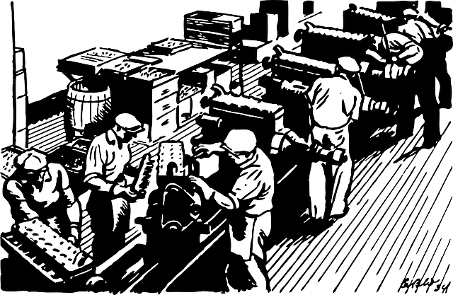

Introducing Continuous Delivery or DevOps should never be a goal in itself, only the means to reach another goal. The definition of the goal depends on the origin for the wish. This could for example be the wish for a smoother deployment process, which would be mainly driven by IT management. Or the reduction of downtime during deployment, mainly driven by business demands (expectation of customers). Continuous Delivery and DevOps can help achieving both of these goals.

When a company is looking to introduce Continuous Delivery and/or DevOps it is important to look at the development and deployment processes used inside the company and the organization of different divisions inside the company. Continuous delivery focuses mostly on the deployment pipeline, the tools. DevOps focuses more on the organization of the company.
One important aspect is looking at responsibility. Who is responsible when something goes wrong? Less important is who is theoretically responsible, but who is really responsible, so who gets the call when a system goes down at 2AM? Who has to deal with the fallout when something breaks? Here you will find the smells that show where the problems are inside a company and where DevOps could create a better culture.
Another aspect is looking at how software gets deployed in production. Part of introducing CD is automating the deployment process. The level of automation will depend on the investment that the company is willing to make. Currently the tooling available is not yet at such a level that facebook or google style “unnoticed” deployment is easily possible. I do expect this to get better in the future (look at Microsoft’s Azure for example), but there will always be an extra cost to doing CD. Think for example about higher complexity in database design. Companies will have to decide the investment they are willing to make and where they see the most benefit. For some companies a Facebook of Google style deployment will not make business sense.
Lets look a company developing B2B applications for Dutch clients and their need for CD. They may still want rapid deployment (for example every week) to support there Agile development process. But their application is only used during business hours. After business hours there is sometimes an occasional user (someone working late or forgot something and does it from home), but 99% of the activity is during the day. How much will an investment in live updating of the application be worth? If we can do the deployment in 15 minutes and do it always outside of business hours? That would probably be good enough, right?
It is important to realize though, that there are always some side scenario’s to consider. Think for example in the above scenario about this nasty bug you found that needs to be fixed immediately. Your patch process is (if you follow CD) the same as your normal deployment process. So now we have to bring our application down during business hours. This is probably not different than before implementing CD, but these gotcha’s have to be clear for management.
A cost-benefit evaluation should have been made with every scenario in mind and agreed upon by IT & business management. Only than can be decided how much the introduction of Continuous Delivery and DevOps inside a company may cost.
In future posts I will go into more detail about parts mentioned in this blog post.